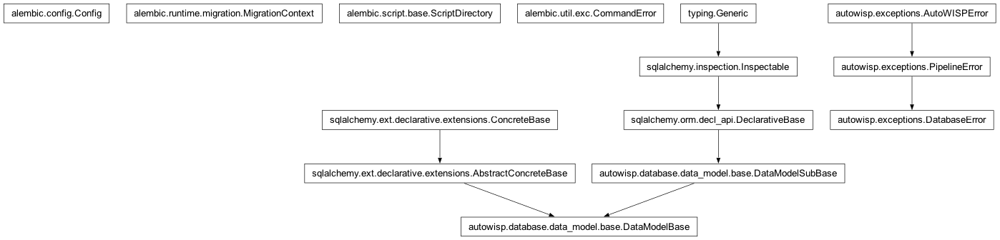

autowisp.database.migrate module
Class Inheritance Diagram

Apply and check Alembic migrations for a project database.
Alembic supplies the revision graph, the alembic_version table, stamping
and SQLite batch mode. What it does not supply, and what this module is
mostly about, is when and where migrations run:
check_project_schema()is read-only and is whatautowisp.database.interface.set_project_home()calls. Every process opening a project runs it, including every pipeline worker, so it must never issue DDL – dozens of workers racing toCREATE INDEXis the failure this split exists to prevent. A database behind head fails loudly here instead of misbehaving later.migrate_project()is the only thing that mutates, and is called from the browser interface when a project is selected, fromwisp-migrate, and once from the main process of a pipeline run.
The revision chain is kept strictly linear (a test asserts it), so the
singular Alembic APIs are used throughout: get_current_revision and
get_current_head rather than their plural counterparts. Both raise if a
fork ever reaches them, which is the behaviour wanted – a fork is a mistake
to surface, not a state to support.
See project_db_migrations_plan.md for the reasoning.
- autowisp.database.migrate.BASELINE_REVISION = '0001_baseline'
Revision marking the schema
_apply_additive_migrations()produces.
- autowisp.database.migrate._apply_additive_migrations(connection)[source]
Bring a project database that predates Alembic up to the 1.8.1 schema.
Note
This is not where new schema changes go. It is frozen at its 1.8.1 contents and is called from exactly one place –
migrate_project(), on a database carrying noalembic_versiontable – to reach the state that0001_baselinestamps. Everything after 1.8.1 is an Alembic revision undermigrations/versions.It survives rather than being converted into revisions because its
create_allhalf cannot be: that is a catch-all for any table added at any point since a project was initialised, and the history of when each table appeared is not recorded anywhere. Expressing it as revisions would mean either reconstructing that history by git archaeology, or callingcreate_allfrom inside a revision – which would create today’s tables rather than the ones contemporary with the revision, and so would silently change meaning every time a model is added.Idempotent, so running it against an already-current database does nothing.
Takes a connection rather than an engine so it runs inside the caller’s migration lock. Opening a second connection here would block against that lock instead of cooperating with it.
- Parameters:
connection – An open connection to the project database, inside a transaction held by
_locked_connection().- Returns:
None
- autowisp.database.migrate._backup_sqlite(engine, current)[source]
Copy an SQLite project database aside before migrating it.
The copy is named for the revision it is a snapshot of, so
autowisp.db.pre-0001_baselineis the database as it stood at0001_baseline.Returns the backup path, or None for a non-SQLite database, where backups are the administrator’s job (see
migrate_project()).
- autowisp.database.migrate._is_known_revision(revision)[source]
Whether revision is one the installed code ships.
False means the database was migrated by a newer AutoWISP than this one, which needs different advice: upgrading the code, not running a migration this install does not have.
- autowisp.database.migrate._locked_connection(engine)[source]
Yield a connection in a transaction, with the migration lock held.
Alembic has no locking of its own – two concurrent
upgradecalls both read the same revision and both run it – and concurrency is reachable here: a centralised MySQL project database serves several users at once, and starting a pipeline run while the browser interface is open is ordinary.
- autowisp.database.migrate._missing_timestamp_triggers(connection)[source]
Return
{table: key_columns}for tables with no timestamp trigger.Read-only, so the healthy case – which is every case where no revision rebuilt a table – costs two catalogue queries and no DDL.
Both backends are checked. Only SQLite loses triggers to a rebuild, but a database created before the triggers were attached off the shared metadata is missing the provenance ones whichever backend it is on.
- autowisp.database.migrate._sqlite_immediate(engine)[source]
Make this engine’s transactions take SQLite’s write lock up front.
pysqlite defers
BEGINuntil a DML statement, which would let two migrators both read the current revision before either writes.BEGIN IMMEDIATEtakes the write lock when the transaction opens instead, so the second blocks (on the engine’s busy timeout) rather than re-running a migration that is already being applied.Turning off the driver’s implicit transaction handling is the documented SQLAlchemy recipe for controlling SQLite’s
BEGIN.
- autowisp.database.migrate._stamp(connection, revision)[source]
Record revision as applied, on the caller’s connection.
- autowisp.database.migrate.check_project_schema(engine)[source]
Raise unless the project database is at the current head revision.
Read-only by design – see the module docstring. This is what
autowisp.database.interface.set_project_home()calls, so it runs in every pipeline worker and must never attempt DDL.- Parameters:
engine – The SQLAlchemy engine for the project database.
- Raises:
DatabaseError – If the database is behind, ahead of, or otherwise disagrees with the installed migration scripts.
- autowisp.database.migrate.create_project_schema(engine)[source]
Build the current schema and record it as being at head.
The two halves belong together:
create_allproduces today’s tables directly, so the revisions describing how to get there must be marked applied rather than run. Creating the schema without stamping would leave the database looking like an un-baselined legacy project, andmigrate_project()would then try to apply revisions it already satisfies.Pairing them in one function is what stops those two steps drifting apart across the several places a project database gets created.
- autowisp.database.migrate.get_head_revision()[source]
Return the newest revision shipped with the installed code.
Cached: this is a property of the code, not of any database, and
check_project_schema()runs in every worker process on every project open. Without the cache each of those would re-walk and re-importversions/.
- autowisp.database.migrate.get_project_revision(engine)[source]
Return the revision a project database is stamped at, or None.
None means the database has no
alembic_versiontable – it predates Alembic and needs baselining.
- autowisp.database.migrate.get_schema_drift(engine)[source]
Return how engine’s schema differs from the ORM models.
Empty means they agree. This is the guard behind a duplication the design accepts deliberately: a revision may not import the models – it has to keep describing the same schema forever, while the models move – so an index or column is declared twice, once in
data_modeland once in the revision that creates it. Nothing stops the two drifting apart except noticing, which is what this does.- Parameters:
engine – The SQLAlchemy engine for the database to compare.
- Returns:
- Alembic’s autogenerate diff entries, e.g.
("add_index", Index(...))for something the models declare and the database lacks.
- Return type:
- autowisp.database.migrate.migrate_project(engine, *, assume_backed_up=False)[source]
Bring a project database up to the current head revision.
The only function here that mutates. Handles three cases:
stamped – upgrade to head;
AutoWISP tables but no
alembic_version– predates Alembic, so reach a known state with_apply_additive_migrations(), stamp0001_baseline, then upgrade;empty – create the schema and stamp head.
- Parameters:
engine – The SQLAlchemy engine for the project database.
assume_backed_up (bool) – Required to migrate a server database. SQLite databases are copied aside automatically, but a MySQL/MariaDB one cannot be, and MySQL cannot roll DDL back, so proceeding without a backup has to be a deliberate choice.
- Returns:
{"from": ..., "to": ..., "backup": ...}.fromequalstoif the database was already current. Which revisions ran in between is Alembic’s business, not something worth recomputing here.- Return type:
- Raises:
DatabaseError – If a server database is migrated without
assume_backed_up, or the migration lock cannot be taken.
- autowisp.database.migrate.restore_timestamp_triggers(connection)[source]
Install any update-timestamp trigger the database is missing.
Brings an existing database in line with what the models would create, covering two ways it can fall behind:
SQLite cannot alter a column in place, so
batch_alter_tablerebuilds the table: copy, drop the original, rename the copy into place. Dropping the original takes its triggers with it, and the copy is created by the revision rather than from the models, so theafter_createlisteners that install them never fire. Every revision that genuinely rebuilds a table has therefore been removing that table’s trigger – upgrading a 1.8.1 database loses seven of them.The twelve provenance tables, separately, never had one to lose: the triggers used to be attached per class discovered by
data_model.import_table_definitions, whose glob does not reach intodata_model/provenance. Attaching them off the shared metadata fixed that for databases created from now on; these are how the ones already on disk catch up.This is a catch-all rather than a revision for the same reason
_apply_additive_migrations()runscreate_all: a revision would repair the databases damaged before it, and nothing at all after it. Running here means whatever the revisions just did, the triggers are correct when they finish – including for revisions not yet written.The consequence of a missing one is confined to provenance: every trigger in this schema does nothing but maintain
timestamp, so an affected table stopped recording when its rows last changed, and nothing computes a different answer as a result.- Parameters:
connection – An open connection, inside the caller’s migration lock where one is held.
- Returns:
Names of the tables whose trigger was reinstated.
- Return type: